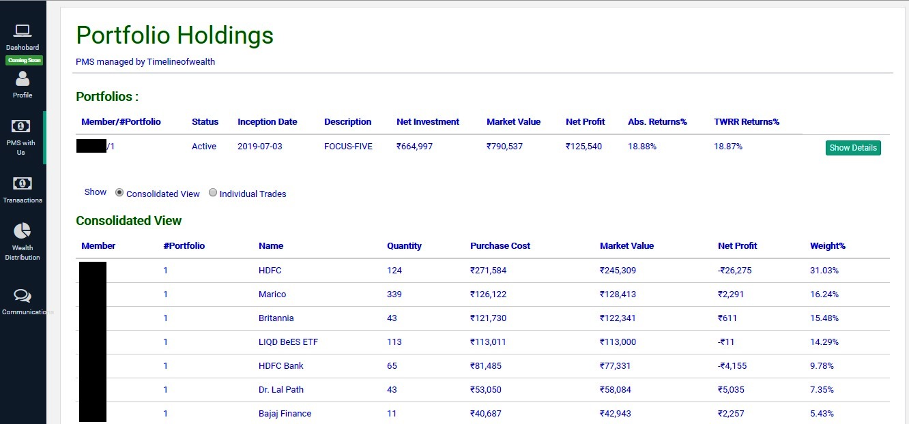
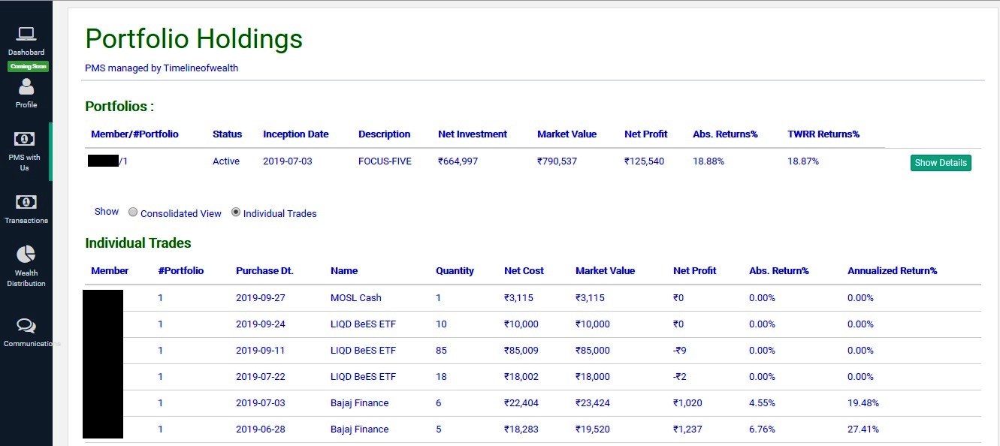
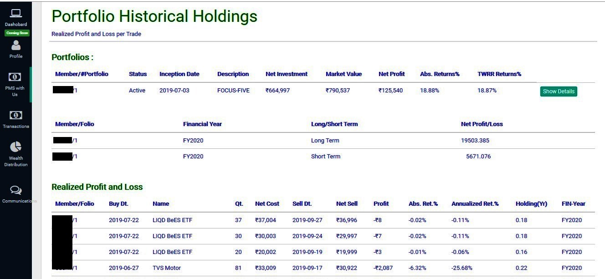
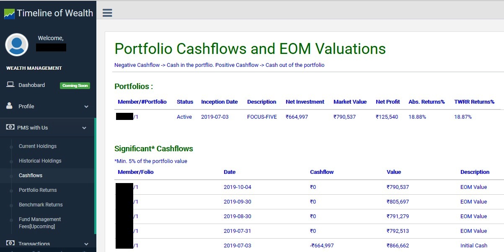
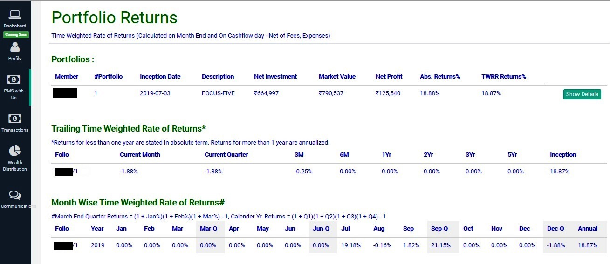
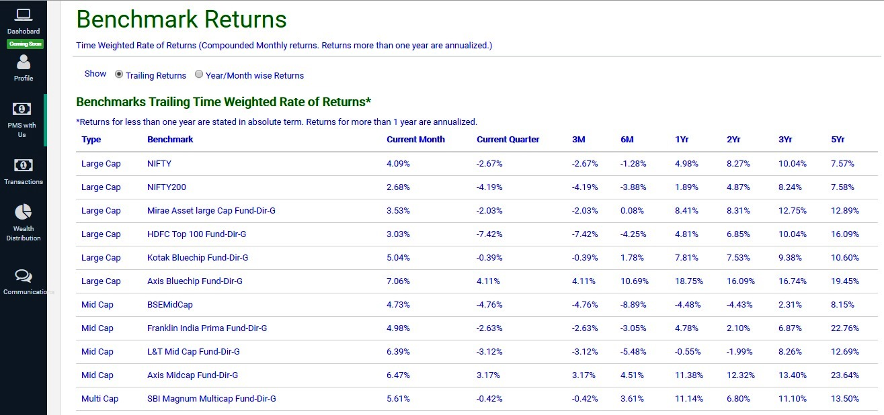
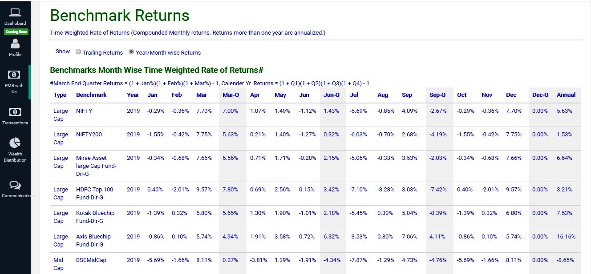

Screenshots of Application for PMS
Timeline of wealth provides you a platform (a technology solution) to manage you clients PMS. Create a composite and then link portfolios tracking similar strategy. Portfolio Returns are calculated on monthly and on major cash flow events. Monthly returns are then compounded to find annualized returns. Benchmark returns are also calculated monthly basis and then compounded to find out annualized returns to compare PMS performance with Benchmarks. You may also compare returns with Mutual Funds. Advertise your composite's returns which are calculated as per GIPS standards
1. Consolidated Portfolio Holdings: Consolidated Holdings so that one can find out weights of securities

2. Transactions of Portfolio Holdings: Individual Transactions

3. Historical Holdings: Realized gains/losses of the portfolio

4. Cashflows and Month-end Values: Portfolios Cashflows. This is useful to find out returns recommended by standards

5. Portfolio Returns: Trailing Returns as well as Monthly Returns of each year

6. Benchmark Returns: Trailing as well as Monthly Returns of each year. Benchmark includes NIFTY-50, NSE200, BSE-MidCap, BSE-SmallCap and Selected Mutual Funds from Large/Multi/Mid and Small Cap category

